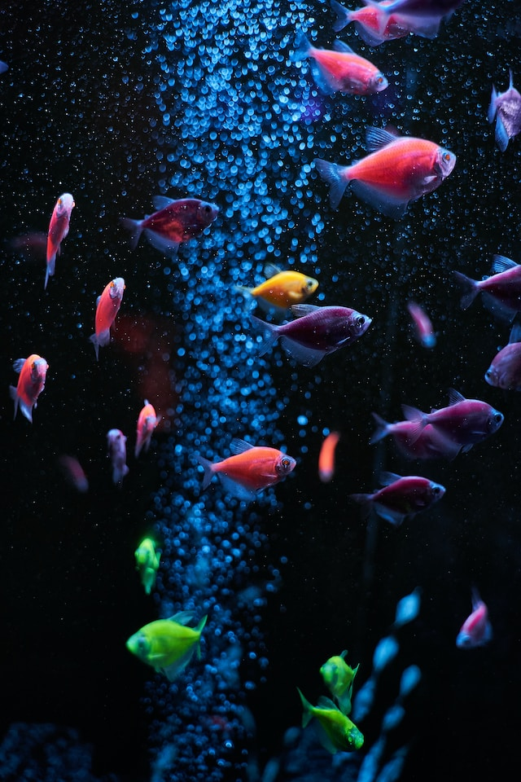

PEIXES
Peixes ou Piscis é o décimo segundo, e último signo astrológico do zodíaco, situado entre Aquário e Áries e associado à constelação de Pisces. Seu símbolo são dois peixes. Forma com Câncer e Escorpião a triplicidade dos signos da Água. É também um dos quatro signos mutáveis, juntamente com Gêmeos, Virgem e Sagitário.
Os peixes são animais vertebrados, aquáticos, tipicamente ectotérmicos, que possuem o corpo fusiforme, os membros transformados em barbatanas ou nadadeiras (ausentes em alguns grupos) sustentadas por raios ósseos ou cartilaginosos, guelras ou brânquias com que respiram o oxigénio dissolvido na água (embora os dipnóicos usem pulmões) e, na sua maior parte, o corpo coberto de escamas.
- Subfilo: Vertebrata
- Superclasse: Peixes
Uma forma de classificar os peixes é segundo o seu comportamento relativamente à região das águas onde vivem; este comportamento determina o papel de cada grupo no ambiente aquático
.jpg)
RAPOSA

Raposas são pequenos a médios mamíferos onívoros pertencentes a vários gêneros da família Canidae. As raposas têm o crânio achatado, orelhas triangulares verticais, focinho pontiagudo e ligeiramente arrebitado e uma cauda longa e espessa. Doze espécies pertencem ao grupo monofilético de "raposas verdadeiras" do gênero Vulpes. Aproximadamente outras 25 espécies atuais ou extintas são parte do grupo parafilético das raposas sul-americanas ou do grupo periférico, que consiste na raposa-orelhas-de-morcego, raposa-cinzenta e raposa-das-ilhas

Raposas são onívoras.[10][11] Sua dieta é composta principalmente de invertebrados, como insetos, e pequenos vertebrados, como répteis e pássaros. Elas também podem comer ovos e vegetação. Muitas espécies são predadores generalistas, mas algumas (como a cachorro-do-mato) têm dietas mais especializadas. A maioria das espécies de raposas consomem cerca de 1 kg de comida todos os dias. Raposas armazenam excesso de comida, enterrando-a para consumo posterior, geralmente sob as folhas, neve ou solo.[6][12] Durante a caça, as raposas tendem a usar uma técnica de ataque específica, de modo que se agacham para se camuflar no terreno e, em seguida, usam as patas traseiras para pular com grande força e pousar em cima da presa escolhida.[2] Usando seus dentes caninos pronunciados, elas podem agarrar o pescoço da presa e sacudi-la até que esteja morta ou possa ser facilmente estripada
- Subordem: Caniformia
- Família: Canidae
Uma forma de classificar os peixes é segundo o seu comportamento relativamente à região das águas onde vivem; este comportamento determina o papel de cada grupo no ambiente aquático